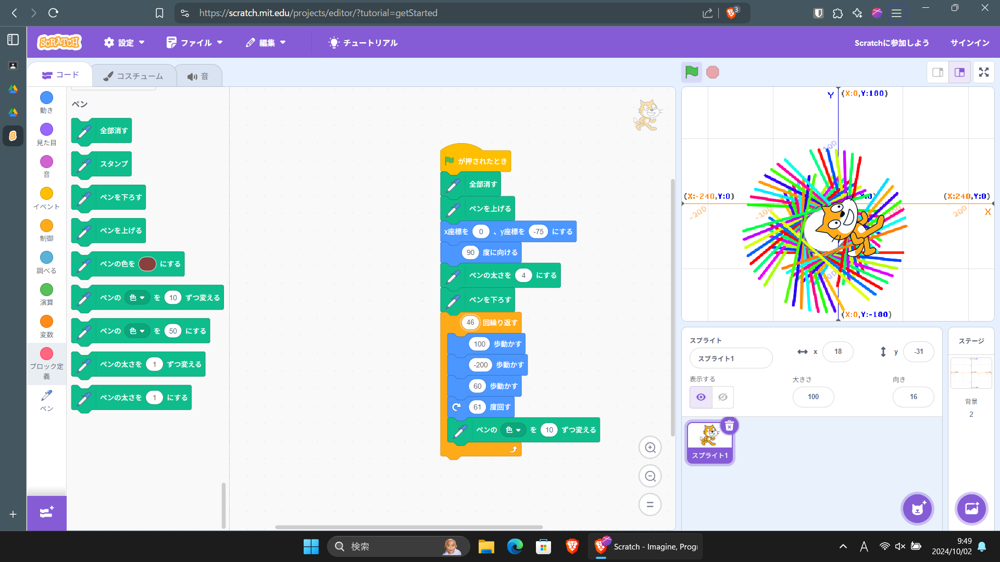

1週目のレポート : 公大高専1年実習I-1
4b班39番 yoshi
第1週目
1-1 サイエンスアート

1.内容
スクラッチを使って線を書くプログラムを作成した。
キャラクターを一定数往復させた後、その向きを変えてまた往復させることを繰り返すことで
サイエンスアートを描いた。
2.感想
数値を1変更するだけで、描かれるアートが大きく異なることが面白かった。
1-2 ゲーム
1.内容
Scratchを用いてリンゴをキャッチするゲームを作成した。
ループ処理を用いてリンゴを繰り返し出現させたり、
変数を用いてリンゴの落下速度によって獲得できるスコアを変動させたりした。
2.感想
スコア変動の仕組みを実装するために、
リンゴの速度を単純な乱数で変動させずに、
一度変数に速度を格納するという処理を挟むなど、工夫するのが楽しかった。
1-3 ホームページ作成
私のホームページ
1.内容
githubからレポジトリをフォークして自分のホームページをhtmlで作成した。
2.感想
各レポートへのリンクを作成しておいた。
書く内容が特に思い浮かばず、デザインセンスもなかったので味気ないページになってしまった。
各ページへのリンク
1週目のレポート
2週目のレポート
3週目のレポート
私のホームページ